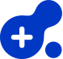

01 · Services
하나의 창구에서
하나의 창구에서
필요한 의료 정보를 잇습니다
기존 의료 서비스 기능은 그대로, 이름과 첫 화면의 경험만 하나로 묶었습니다.
병·의원 찾기
지역·진료과·운영 시간으로 가까운 기관을 찾고 지도로 확인
질병 · 증상 정보
증상에서 질환을 이해하고, 어느 진료과로 가야 할지 안내
응급실 LIVE
응급실 가용 병상과 연락처를 실시간으로 확인
약국 · 의약 정보
운영 중인 약국과 의약품 정보를 한 곳에서 확인
응급실 LIVE공공데이터 실시간 연동 · 가용 병상 정보는 갱신 시점에 따라 달라질 수 있습니다.
02 · AI Concierge
찾아 헤매지 않고,
찾아 헤매지 않고,
말하면 이어집니다
검색어를 고민하는 대신 평소 말로 묻습니다. 답변에는 근거와 출처, 다음 행동이 함께 붙습니다.
아이가 밤에 열이 나는데 지금 갈 수 있는 곳 있어?
현재 위치 기준으로 응급실 운영 기관 2곳이 확인됩니다. 열이 39℃ 이상이거나 경련·호흡 곤란이 있으면 119에 먼저 연락하세요.
응급실 LIVE 보기가까운 약국
출처 · 국립중앙의료원 응급의료정보 · 갱신 방금 전그럼 낮에는 어느 과로 가야 해?
소아청소년과를 권장합니다. 평일 진료 중인 기관을 지역별로 보여드릴까요?
- 01
근거 있는 답변모든 안내는 국가 공공데이터를 기반으로 하며 출처와 갱신 시점을 함께 표시합니다.
- 02
다음 행동까지정보 전달에서 끝나지 않고 전화·길찾기·응급 연결 같은 실제 행동으로 이어줍니다.
- 03
강원도민의 맥락도내 시군 단위 생활권, 이동 거리, 응급 의료 여건을 우선으로 응대합니다.
- 04
판단은 전문가에게AI는 안내자이며 의료적 최종 판단은 의료 전문가의 몫임을 항상 고지합니다.
03 · Naming & Identity
이름이 먼저 건강을
이름이 먼저 건강을
이야기하도록
‘헬로’처럼 가벼운 인사가 아니라, 의료를 도민과 연결하는 서비스의 역할이 이름에 드러나도록 정리했습니다.
Naming
Medi + Link + Kangwon
| Medi | 의료 · 건강. 병의원, 질병, 응급 등 서비스가 다루는 모든 영역 |
|---|---|
| Link | 연결. 도민 ↔ 의료기관, 질문 ↔ 답변, 정보 ↔ 행동을 잇는 AI 응대 |
| Kangwon | 강원특별자치도. 지역 생활권을 책임지는 도민 전용 포털이라는 선언 |
| Before | 헬로메디강원 · 친근하나 서비스 기능이 이름에서 보이지 않음 |
| Tone | 친절한 안내자. 가볍지 않게, 그러나 어렵지 않게 |
Symbol · 세포가 이어진 형태
서로 다른 크기의 세포(병의원·질병·응급)가 하나의 형태로 연결되고, 중심의 ‘+’가 의료임을 말합니다. 메타볼 표현은 AI 응대 화면의 모션 모티프로 확장됩니다.

기본(흰 배경) · 어두운 배경(dot 반전) · 단색(32px 이하·인쇄·각인용)
Lockup · 국문
메디링크 강원MediLink Kangwon · 국문 우선, 영문 병기
Lockup · 영문
MediLink
Kangwon해외·약칭 표기 시 한 줄 또는 두 줄 가능 · 약칭 “메디링크”
Kangwon해외·약칭 표기 시 한 줄 또는 두 줄 가능 · 약칭 “메디링크”